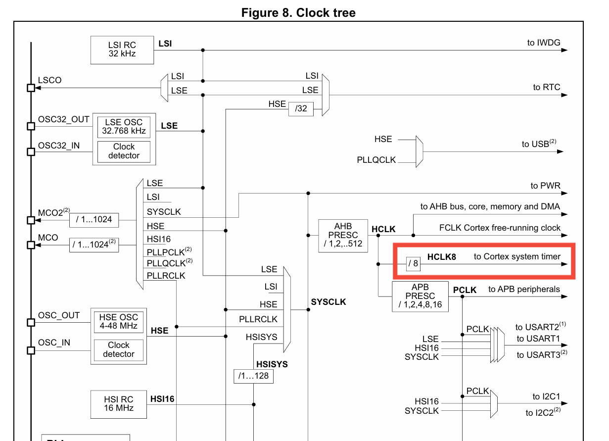
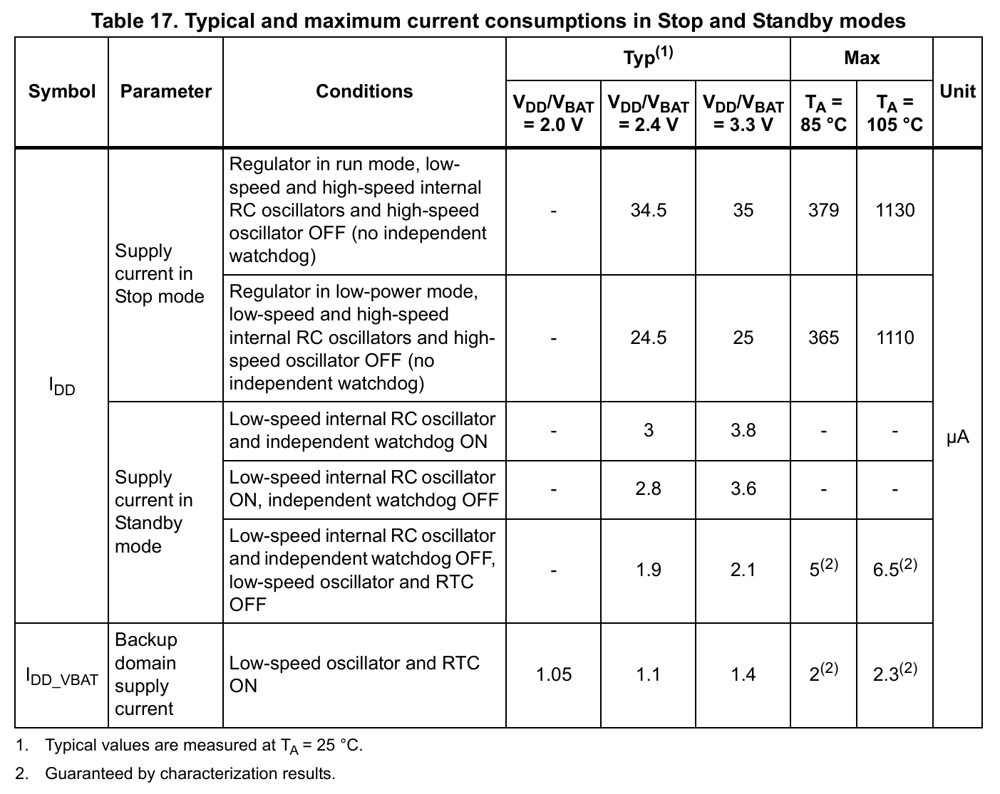
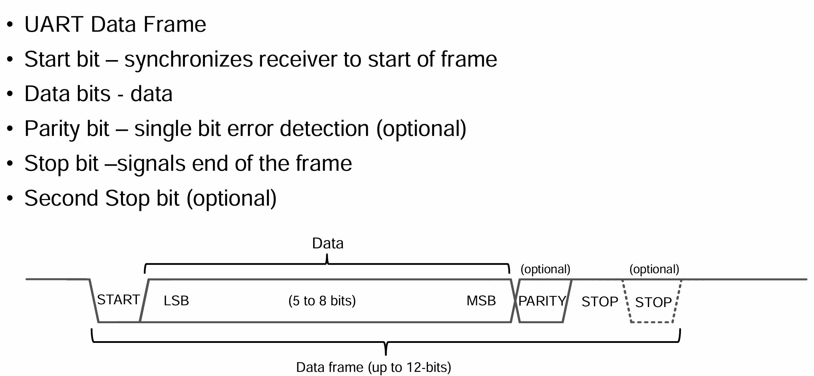

Chapter1 软件分层设计架构
分层设计架构
-
APL 应用层 (Application Layer)
基于各个模块实现业务的代码，例如 任务调度，UI交互逻辑，数据保存 等。
-
FML 功能模块层 (Function Module Layer)
是对PDL API调用的封装，和模块本身的全部功能定义。
假定一个EEPROM数据存取功能模块，at24c02.c 将包含at24cxx_init()、at24cxx_read()、at24cxx_write()、等涉及该模块的全部动作。
这些模块的动作包含在设备模块层FML，并且向上提供接口。
-
HDL 外设驱动层(或BSP) (Hardware Driver Layer)
是对HAL API调用的封装，例如外设初始化，外设基本动作等。 如定时器初始化tim_init、定时器中断函数。串口初始化uart_init、串口中断函数
假定一个AT24C02(EEPROM)实现读一个字节的操作，at24cxx_read_byte() 需要 iic_start()，iic_send_byte()，iic_wait_ack()，iic_stop() 一系列动作序列驱动 这些外设的基本动作包含在外设驱动层中PDL，并且向上提供接口。
-
HAL 硬件抽象层（Hardware Abstract Layer）
由厂家提供，是对硬件寄存器操作的封装层。 MCU的内核资源 Systick、NVIC / 片上资源 GPIO、UART、FLASH、ADC等等
-
UTIL 实用程序（Utility）
组件层，例如crc校验，queue循环队列，排序算法，滤波算法等实用程序。
为什么需要分层？
1 解耦合。假设某成熟项目需要替换MCU物料，如果不使用分层的软件架构，那么涉及到底层驱动部分的代码都需要更改，如果使用分层，大部分替换到HDL层，最多到FML层，就替换完成了。或是更换了某个硬件模块，修改对应的FML代码，再向APL提供接口即可。
2 大道至简，越简单、逻辑越清晰的代码，越不容易犯错，即使出错也越容易纠错。合理的软件架构可以节省开发时间，节省调试时间等，时间就是金钱。
1. APL (Application Layer)
1.1 LinkList 链表（链式存储线性表）
上述项目使用到链表来实现。
例如下面这段MultiTimer添加软件定时器的代码
int multiTimerStart(MultiTimer* timer, uint64_t timing, MultiTimerCallback_t callback, void* userData) {
if (!timer || !callback || platformTicksFunction == NULL) {
return -1; // Return error if any parameter is invalid
}
removeTimer(timer); // Centralize removal logic
timer->deadline = platformTicksFunction() + timing;
timer->callback = callback;
timer->userData = userData;
MultiTimer** current = &timerList;
while (*current && ((*current)->deadline < timer->deadline)) {
current = &(*current)->next;
}
timer->next = *current;
*current = timer;
return 0;
}
1.2 Queue 队列 （FIFO线性表）
队列queue在MCU中又常常称为环形缓存ringbuffer。
队列在计算机系统中的应用非常广泛，以下从两个方面来举例阐述
-
解决主机与外部设备速度不匹配的问题
以主机和打印机之间的速度不匹配的问题为例做简要说明。主机输出数据给打印机打印，输出的数据比打印机的数据要快很多 ，因为速度不匹配，若直接把输出的数据送给打印机，显然是不行的。解决的方法是设置一个打印数据缓冲区，主要把打印输出的数据 依次写入这个缓冲区，写满后就暂停输出，转去做其他事情。打印机就从缓冲区中按照先进先出的原则依次取出数据并且打印，打印完成当前数据再向主机请求数据。这样既保证了打印数据的正确，又使主机提高了效率————王道数据结构
-
例：需要MCU在某时刻产生多条带有当前状态的信息，但UART发送数据受波特率限制，无法短时间内发送完毕，若不缓存，时变原因状态改变。那么先将当前产生的数据入队，串口发送完一包数据后，查看循环队列是否空，非空则数据出队，并且由UART发送。避免丢失当前产生的数据包，并且保持数据包时间关系的一致
-
例：UART接受到了很多数据包，处理数据包需要耗时，但如果不缓存数据包，那么时间推移导致数据覆盖，丢包。此时可以开设一个队列，对每一个接受完成的数据包进行入队，数据入队后进行解析并且出队，避免错失接受的数据包，并且保持数据包时间关系的一致
-
-
解决由多用户引起的资源竞争问题
CPU（即中央处理器，它包括运算器和控制器）资源的竞争就是一个典型例子。在一个带有多终端的计算机系统上，有多个用户需要CPU各自运行自己的程序，他们分别通过各自的终端向操作系统提出占用CPU请求。操作系统通常按照每个请求的时间先后顺序，把他们排成队列，每次CPU分配给队首请求的用户使用。当前的程序运行结束或用完规定的时间间隔后，令其出队，再把CPU分配给队首请求的用户使用。满足每个用户的请求。
/**
* @brief 循环队列入队操作
* @param Q 循环队列首结点地址
* @param x 入队元素
*/
bool EnQueue(SqQueue *Q,ElemType x){
if((Q->rear+1)%MAXSIZE==Q->front)
return false;
Q->data[Q->rear]=x;
Q->rear=(Q->rear+1)%MAXSIZE;
return true;
}
/**
* @brief 循环队列出队操作
* @param Q 循环队列首结点地址
* @param x 出队元素迁移变量
*/
bool DeQueue(SqQueue *Q,ElemType x){
if(Q->rear==Q->front)
return false;
x=Q->data[Q->front];
Q->front=(Q->front+1)%MAXSIZE;
return true;
}
1.3 Stack 栈（FILO线性表）
//数据结构
typedef struct
{
char top;//栈顶
ElemType data[STACK_MAX_SIZE];
}stack;
//判栈空
bool stack_empty(stack *S){
if(S->top == -1) //栈空
return true;
else //不空
return false;
}
//进栈操作
bool stack_push(stack *S,ElemType x){
if(S->top == STACK_MAX_SIZE-1) //栈满，报错
return false;
S->data[++S->top]=x; //指针先加，再入栈
return true;
}
//出栈操作
bool stack_pop(stack *S){
if(S->top == -1) //栈空，报错
return false;
S->top--; //先出栈，指针再减
return true;
}
- 实例：带函数优先级与函数生命周期的任务栈实现UI页面切换
1.4 Scheduler 软件定时器
基础的软件定时器实现如下（回调函数+周期时间+最后运行时间戳）
typedef struct
{
void(*task_func)(void);
uint16_t interval_ticks;
uint32_t tick_last_run;
}sched_task_st;
static void Loop_1ms(void) // 1ms执行一次
{
}
static void Loop_10ms(void) // 10ms执行一次
{
}
static void Loop_100ms(void) // 100ms执行一次
{
}
static void Loop_500ms(void) // 500ms执行一次
{
}
static void Loop_1000ms(void) // 1S执行一次
{
}
static sched_task_st sched_tasks[] =
{
{
.task_func = Loop_1ms,
.interval_ticks = 1,
.tick_last_run = 0
},
{
.task_func = Loop_10ms,
.interval_ticks = 10,
.tick_last_run = 0
},
{
.task_func = Loop_100ms,
.interval_ticks = 100,
.tick_last_run = 0
},
{
.task_func = Loop_500ms,
.interval_ticks = 500,
.tick_last_run = 0
},
{
.task_func = Loop_1000ms,
.interval_ticks = 1000,
.tick_last_run = 0
},
};
#define TASK_NUM (sizeof(sched_tasks) / sizeof(sched_task_t))
void scheduler_setup(void)
{
uint8_t index = 0;
//初始化任务表
for (index = 0; index < TASK_NUM; index++)
{
if (sched_tasks[index].interval_ticks < 1)
{
sched_tasks[index].interval_ticks = 1;
}
}
}
void scheduler_run(void)
{
uint8_t index = 0;
for (index = 0; index < TASK_NUM; index++)
{
//uint32_t system_gettick(void) { return system_param.system_tick; }
//滴答定时器/通用定时器 1ms中断，使得system_param.system_tick++;
uint32_t tick_now = system_gettick();
if (tick_now - sched_tasks[index].tick_last_run >= sched_tasks[index].interval_ticks)
{
sched_tasks[index].tick_last_run = tick_now;
sched_tasks[index].task_func();
}
}
}
1.5 KeyScan 按键扫描
MultiButton与FlexibleButton：通过阅读源码可以发现，MultiButton与FlexibleButton架构类似，都是 轮询+状态机 识别按键状态，通过 扫描-设置事件-触发对应事件callback，并不存在架构上的区别，只不过FlexibleButton代码看起来更精简一些
// Macro for callback execution with null check, passes user_data
#define EVENT_CB(ev) do { if (handle->cb[ev]) handle->cb[ev](handle, handle->user_data); } while(0)
/**
* @brief Button driver core function, driver state machine
* @param handle: the button handle struct
* @retval None
*/
static void button_handler(Button* handle)
{
uint8_t read_gpio_level = button_read_level(handle);
// Increment ticks counter when not in idle state (with saturation)
if (handle->state > BTN_STATE_IDLE) {
if (handle->ticks < UINT16_MAX) {
handle->ticks++;
}
}
/* Button debounce handling */
if (read_gpio_level != handle->button_level) {
// Continue reading same new level for debounce
if (++(handle->debounce_cnt) >= DEBOUNCE_TICKS) {
handle->button_level = read_gpio_level;
handle->debounce_cnt = 0;
}
} else {
// Level not changed, reset counter
handle->debounce_cnt = 0;
}
/* State machine */
switch (handle->state) {
case BTN_STATE_IDLE:
if (handle->button_level == handle->active_level) {
// Button press detected
handle->event = (uint8_t)BTN_PRESS_DOWN;
EVENT_CB(BTN_PRESS_DOWN);
handle->ticks = 0;
handle->repeat = 1;
handle->state = BTN_STATE_PRESS;
} else {
handle->event = (uint8_t)BTN_NONE_PRESS;
}
break;
case BTN_STATE_PRESS:
if (handle->button_level != handle->active_level) {
// Button released
handle->event = (uint8_t)BTN_PRESS_UP;
EVENT_CB(BTN_PRESS_UP);
handle->ticks = 0;
handle->state = BTN_STATE_RELEASE;
} else if (handle->ticks > LONG_TICKS) {
// Long press detected
handle->event = (uint8_t)BTN_LONG_PRESS_START;
EVENT_CB(BTN_LONG_PRESS_START);
handle->state = BTN_STATE_LONG_HOLD;
}
break;
case BTN_STATE_RELEASE:
if (handle->button_level == handle->active_level) {
// Button pressed again
handle->event = (uint8_t)BTN_PRESS_DOWN;
EVENT_CB(BTN_PRESS_DOWN);
if (handle->repeat < PRESS_REPEAT_MAX_NUM) {
handle->repeat++;
}
handle->event = (uint8_t)BTN_PRESS_REPEAT;
EVENT_CB(BTN_PRESS_REPEAT);
handle->ticks = 0;
handle->state = BTN_STATE_REPEAT;
} else if (handle->ticks > SHORT_TICKS) {
// Timeout reached, determine click type
if (handle->repeat == 1) {
handle->event = (uint8_t)BTN_SINGLE_CLICK;
EVENT_CB(BTN_SINGLE_CLICK);
} else if (handle->repeat == 2) {
handle->event = (uint8_t)BTN_DOUBLE_CLICK;
EVENT_CB(BTN_DOUBLE_CLICK);
}
handle->state = BTN_STATE_IDLE;
}
break;
case BTN_STATE_REPEAT:
if (handle->button_level != handle->active_level) {
// Button released
handle->event = (uint8_t)BTN_PRESS_UP;
EVENT_CB(BTN_PRESS_UP);
if (handle->ticks < SHORT_TICKS) {
handle->ticks = 0;
handle->state = BTN_STATE_RELEASE; // Continue waiting for more presses
} else {
handle->state = BTN_STATE_IDLE; // End of sequence
}
} else if (handle->ticks > SHORT_TICKS) {
// Held down too long, treat as normal press
handle->ticks = 0; // reset for fresh long-press timing
handle->repeat = 0; // clear repeat count for new press cycle
handle->state = BTN_STATE_PRESS;
}
break;
case BTN_STATE_LONG_HOLD:
if (handle->button_level == handle->active_level) {
// Continue holding
handle->event = (uint8_t)BTN_LONG_PRESS_HOLD;
EVENT_CB(BTN_LONG_PRESS_HOLD);
} else {
// Released from long press
handle->event = (uint8_t)BTN_PRESS_UP;
EVENT_CB(BTN_PRESS_UP);
handle->state = BTN_STATE_IDLE;
}
break;
default:
// Invalid state, reset to idle
handle->state = BTN_STATE_IDLE;
break;
}
}
#define EVENT_SET_AND_EXEC_CB(btn, evt) \
do \
{ \
btn->event = evt; \
if(btn->cb) \
btn->cb((flex_button_t*)btn); \
} while(0)
/**
* @brief Handle all key events in one scan cycle.
* Must be used after 'flex_button_read' API
*
* @param void
* @return Activated button count
*/
static uint8_t flex_button_process(void)
{
uint8_t i;
uint8_t active_btn_cnt = 0;
flex_button_t* target;
for (target = btn_head, i = button_cnt - 1; target != NULL; target = target->next, i--)
{
if (target->status > FLEX_BTN_STAGE_DEFAULT)
{
target->scan_cnt ++;
if (target->scan_cnt >= ((1 << (sizeof(target->scan_cnt) * 8)) - 1))
{
target->scan_cnt = target->long_hold_start_tick;
}
}
switch (target->status)
{
case FLEX_BTN_STAGE_DEFAULT: /* stage: default(button up) */
if (BTN_IS_PRESSED(i)) /* is pressed */
{
target->scan_cnt = 0;
target->click_cnt = 0;
EVENT_SET_AND_EXEC_CB(target, FLEX_BTN_PRESS_DOWN);
/* swtich to button down stage */
target->status = FLEX_BTN_STAGE_DOWN;
}
else
{
target->event = FLEX_BTN_PRESS_NONE;
}
break;
case FLEX_BTN_STAGE_DOWN: /* stage: button down */
if (BTN_IS_PRESSED(i)) /* is pressed */
{
if (target->click_cnt > 0) /* multiple click */
{
if (target->scan_cnt > target->max_multiple_clicks_interval)
{
EVENT_SET_AND_EXEC_CB(target,
target->click_cnt < FLEX_BTN_PRESS_REPEAT_CLICK ?
target->click_cnt :
FLEX_BTN_PRESS_REPEAT_CLICK);
/* swtich to button down stage */
target->status = FLEX_BTN_STAGE_DOWN;
target->scan_cnt = 0;
target->click_cnt = 0;
}
}
else if (target->scan_cnt >= target->long_hold_start_tick)
{
if (target->event != FLEX_BTN_PRESS_LONG_HOLD)
{
EVENT_SET_AND_EXEC_CB(target, FLEX_BTN_PRESS_LONG_HOLD);
}
}
else if (target->scan_cnt >= target->long_press_start_tick)
{
if (target->event != FLEX_BTN_PRESS_LONG_START)
{
EVENT_SET_AND_EXEC_CB(target, FLEX_BTN_PRESS_LONG_START);
}
}
else if (target->scan_cnt >= target->short_press_start_tick)
{
if (target->event != FLEX_BTN_PRESS_SHORT_START)
{
EVENT_SET_AND_EXEC_CB(target, FLEX_BTN_PRESS_SHORT_START);
}
}
}
else /* button up */
{
if (target->scan_cnt >= target->long_hold_start_tick)
{
EVENT_SET_AND_EXEC_CB(target, FLEX_BTN_PRESS_LONG_HOLD_UP);
target->status = FLEX_BTN_STAGE_DEFAULT;
}
else if (target->scan_cnt >= target->long_press_start_tick)
{
EVENT_SET_AND_EXEC_CB(target, FLEX_BTN_PRESS_LONG_UP);
target->status = FLEX_BTN_STAGE_DEFAULT;
}
else if (target->scan_cnt >= target->short_press_start_tick)
{
EVENT_SET_AND_EXEC_CB(target, FLEX_BTN_PRESS_SHORT_UP);
target->status = FLEX_BTN_STAGE_DEFAULT;
}
else
{
/* swtich to multiple click stage */
target->status = FLEX_BTN_STAGE_MULTIPLE_CLICK;
target->click_cnt ++;
}
}
break;
case FLEX_BTN_STAGE_MULTIPLE_CLICK: /* stage: multiple click */
if (BTN_IS_PRESSED(i)) /* is pressed */
{
/* swtich to button down stage */
target->status = FLEX_BTN_STAGE_DOWN;
target->scan_cnt = 0;
}
else
{
if (target->scan_cnt > target->max_multiple_clicks_interval)
{
EVENT_SET_AND_EXEC_CB(target,
target->click_cnt < FLEX_BTN_PRESS_REPEAT_CLICK ?
target->click_cnt :
FLEX_BTN_PRESS_REPEAT_CLICK);
/* swtich to default stage */
target->status = FLEX_BTN_STAGE_DEFAULT;
}
}
break;
}
if (target->status > FLEX_BTN_STAGE_DEFAULT)
{
active_btn_cnt ++;
}
}
return active_btn_cnt;
}
-
少量IO检测多个按键实现
1.使用矩阵按键，例如行4列4，8个IO组成的矩阵可以检测4*4=16个按键，但少量按键这个方法不合适
2.使用ADC检测多个按键，通过电阻分压，使得不同按键电压值不同。
1.6 Menu 多级菜单
// 使用结构体定义菜单类，并且使用结构体指针跳转菜单层级
#define ARR_LEN(ARR) (sizeof(ARR)/sizeof((ARR)[0]))
typedef struct{
//当前菜单索引
uint8_t menu_idx;
//菜单名称
uint8_t menu_name[20];
//菜单函数指针
void (*func)(void);
}menu;
//首页菜单
menu home_page[] =
{
{//短信菜单
.menu_idx = 0,
.menu_name = "message",
.func = &message_func
},
{//电话菜单
.menu_idx = 1,
.menu_name = "call",
.func = &call_func
},
{//设置菜单
.menu_idx = 2,
.menu_name = "setting",
.func = &setting_func
}
};
//设置菜单——子菜单
menu setting_page[] =
{
{//时间设置
.menu_idx = 0,
.menu_name = "time_setting",
.func = &time_setting_func
},
{//音量设置
.menu_idx = 1,
.menu_name = "volume_setting",
.func = &volume_setting_func
},
{//亮度设置
.menu_idx = 2,
.menu_name = "brightness_setting",
.func = &brightness_setting_func
}
};
//菜单指针
menu *menu_ptr = NULL;
menu_ptr = &home_page[0];//初始化为首页菜单
void setting_func(void)
{
menu_ptr = &setting_page[0];//跳转到设置菜单
show_menu(menu_ptr, ARR_LEN(setting_page));
}
1.7 Logger 日志模块
在某些情况下，我们往往很难接入仿真器来调试MCU，例如高速运行的MCU程序，添加断点可能导致问题无法复现，又或是产品在某个环境下低概率复现的问题，无法通过短时间借入调试器查找bug。又或者是某些低端处理器不带有仿真器调试功能，例如Telink TLRS82xx的SWS接口。
这个时候需要日志来查看MCU的运行情况，也就是让MCU实时给我们汇报状态。
InAppProgram 应用升级
Note
IAP (In Application Program) / OTA (Over The Air)
Bootloader（引导程序）+FlashArea1（APP1应用程序段）+FlashArea2（APP2应用程序备份段）
为了防止IAP升级失败，应该有刷新回滚功能，即备份段（若MCU的FLASH空间足够）
主要在于Bootloader的程序编写，次要在于APP程序中断向量表偏移，以及Boot与APP间的跳转
-
Bootloader：用通信来接收APP的bin文件，可以写入片内Flash，或SRAM直接跳转。接收完成后应当校验程序是否完整，才能进行跳转
//STM32中的简易的BOOT跳转APP //确定app程序区首地址 #define FLASH_APP1_ADDR 0x08002000 typedef void (*iapfun)(void);//定义一个函数类型的参数. iapfun jump2app; //设置堆栈地址 __asm void MSR_MSP(uint32_t addr) { MSR MSP, r0 //set Main Stack value BX r14 } //跳转到应用程序段 //appxaddr:用户代码起始地址. void iap_load_app(uint32_t appxaddr) { if(((*(vu32*)appxaddr)&0x2FFE0000)==0x20000000) //检查栈顶地址是否合法. { jump2app=(iapfun)*(vu32*)(appxaddr+4); //用户代码区第二个字为程序开始地址(复位地址) MSR_MSP(*(vu32*)appxaddr); //初始化APP堆栈指针(用户代码区的第一个字用于存放栈顶地址) jump2app(); //跳转到APP. } } int main(void) { SystemInit();//系统时钟初始化 if(((*(vu32*)(FLASH_APP1_ADDR+4))&0xFF000000)==0x08000000)//判断是否为0X08XXXXXX. { iap_load_app(FLASH_APP1_ADDR);//执行FLASH APP代码 } } -
APP：由于Boot程序已经占用了Flash的一些空间，所以需要根据占用来偏移APP程序的所在空间。另外需要重新定位中断向量表，使得APP程序里中断可以正常运行
#define APP_START_ADDRESS (uint32_t)(0x08002000) SCB->VTOR = APP_START_ADDRESS; /* Vector Table Relocation in Internal FLASH. */需要注意的是 Cortex-M0 的中断向量表重定位，因为M0架构没有重定位寄存器，使用无法使用
SCB->VTOR来重新定位中断向量表。 常规的做法是，RAM中腾处一些固定空间，专门存放复制的中断向量表。然后重新定向到RAM地址（通常0x20000000）
2. HDL（Hardware Driver Layer）

DataSheet
DataSheet一般会描述器件的各方硬件特性，如 芯片概述、功能特性、引脚定义、电气特性、封装特性
ReferenceManual
ReferenceManual通常是对芯片的详细描述，例如各芯片的架构、存储器、以及外设的功能描述，寄存器描述等
2.1 SysTick 滴答定时器
系统定时器
SysTick是一个内核外设。因为大部分MCU内核都有SysTick这个外设，使得基于SysTick的软件在不同架构MCU之间可以很容易的移植。
SYSTICK的时钟固定为HCLK时钟的1/8，具体可见ReferenceManual->RCC->Clock中的时钟树
下面截取了STM32G030的时钟树，可以看见systick是8分频的，其他系列MCU也一样

基于Systick，我们可以实现delay_ms()与delay_us()。
STM32延时函数的三种方法及各自的优缺点——最好掌握第三种
// 以72Mhz的STM32F103举例，其SysTick 频率默认为 f = 9MHz（SysTick对HCLK进行8分频）
// 也就是T = 1/f = 1/9000000 s = 1/9 us 机器数减1
// 故 fac_us = 9（fac_us代表每个us需要的systick时钟数）
// 而 fac_ms = 9000（代表每个ms需要的systick时钟数）
static uint32_t fac_us = 0;
static uint32_t fac_ms = 0;
void delay_init(void)
{
fac_us = HAL_RCC_GetSysClockFreq()/1000000/8;
fac_ms = HAL_RCC_GetSysClockFreq()/1000/8;
}
// LOAD 是 SysTick 的一个寄存器，为24位计数器，也就是它是有限制的
// 因此 nms，nus 参数也是有上限的！！！
// 即fac_us*nus < 0xFFFFFF，fac_ms*nms < 0xFFFFFF
void delay_us(uint32_t nus)
{
uint32_t temp;
SysTick->LOAD = fac_us*nus;
SysTick->VAL=0X00;//清空计数器
SysTick->CTRL=0X01;//使能，减到零是无动作，采用外部时钟源
do
{
temp=SysTick->CTRL;//读取当前倒计数值
}while((temp&0x01)&&(!(temp&(1<<16))));//等待时间到达
SysTick->CTRL=0x00; //关闭计数器
SysTick->VAL =0X00; //清空计数器
}
void delay_ms(uint32_t nms)
{
uint32_t temp;
SysTick->LOAD = fac_ms*nms;
SysTick->VAL=0X00;//清空计数器
SysTick->CTRL=0X01;//使能，减到零是无动作，采用外部时钟源
do
{
temp=SysTick->CTRL;//读取当前倒计数值
}while((temp&0x01)&&(!(temp&(1<<16))));//等待时间到达
SysTick->CTRL=0x00; //关闭计数器
SysTick->VAL =0X00; //清空计数器
}
基于Systick，也可以作为一个定时器来使用，产生定时中断提供系统时基
// 1——滴答定时器配置 SysTick_Config
// f = 72Mhz时钟频率举例，1秒的时间内产生72000000个计数。
// T = 1/f = 1/72000 000。
// 72000 000 / 1000 = 72000，也就是设置计数到72000次，产生一次中断。
// 72000*T = 1/1000 = 0.001s = 1ms
SysTick_Config(SystemCoreClock / 1000);//SystemCoreClock 为MCU主频 .
// 2——滴答中断处理函数 SysTick_Handler
void SysTick_Handler()//滴答中断处理函数
{
}
2.2 RCC 复位和时钟控制
RCC（Reset and Clock Control）
RCC是STM32微控制器中的一个重要模块。用于管理系统的时钟和复位功能。
初始化给MCU配置时钟频率时，必须要时钟RCC寄存器
RCC 模块负责为各个外设提供时钟信号，并控制这些时钟信号的通断
2.3 GPIO 通用输入输出
General Purpose Input Output
1） GPIO_Mode_AIN 模拟输入；功耗最低的IO状态，ADC输入等
对 I/O 端口进行编程作为模拟输入时：1）输出缓冲器被关闭； 2）施密特触发器输入被禁用，因此I/O引脚的每个模拟值零消耗。施密特触发器的输出被强制为恒定值0； 3）上拉和下拉电阻被硬件关闭；
2） GPIO_Mode_IN_FLOATING 浮空输入；常用于按键IO输入
3） GPIO_Mode_IPD 下拉输入；默认低电平，检测上升沿
4） GPIO_Mode_IPU 上拉输入；默认高电平，检测下升沿
5） GPIO_Mode_Out_OD 开漏输出；
适合多设备共享总线的场景，如I2C总线、SMBus等。可以通过外部上拉电阻灵活调整高电平电压，适合不同电源电压的设备互联。常用于需要逻辑“与”操作的场景（线与逻辑），即多个开漏输出连接到同一条总线，只有所有输出都为低电平时，总线才为低电平。
6） GPIO_Mode_Out_PP 推挽输出；
适合需要直接驱动负载的场景，如控制LED、驱动电机等。常用于单设备输出，不需要与其他设备共享总线。
7） GPIO_Mode_AF_OD 复用开漏输出；IIC
8） GPIO_Mode_AF_PP 复用推挽输出。UART, SPI
2.4 EXIT 外部中断
2.5 TIM 定时器
2.6 ADC 模数转换器
2.7 DMA 直接内存访问
2.8 PWR 电源控制
MCU低功耗控制
微控制器中，PWR（Power Control）模块负责管理芯片的供电和电源控制，支持多种工作模式以降低功耗。
PWR模块通过配置控制寄存器来实现这些模式的切换和管理。例如 工作模式、睡眠模式sleep、待机模式standby、停止模式stop等。
在很多应用场合中都对电子设备的功耗要求非常苛刻。
例如某些传感器信息采集设备，仅靠小型的电池提供电源，要求工作长达数年之久，且期间不需要任何维护。
例如智能穿戴设备的小型化要求，电池体积不能太大导致容量也比较小，所以有必要从控制功耗入手，提高设备的续行时间。
PWR__电源管理器
-
可编程电压监测器
可编程电压监测器PVD（Programmable Voltage Detector）可以用来监视芯片的供电电压，在供电电 压下降到给定的阈值以下时，产生一个中断，软件可以做紧急处理。当供电电压又恢复到给定的阈值以上 时，也会产生一个中断，软件处理供电恢复。供电下降的阈值与供电上升的阈值有一个固定的差值，这就 是PVD迟滞电压，通过列出的PVD阈值数据可以看到这个差别。引入这个差值的目的是为了防止电压在 阈值上下小幅抖动，而频繁地产生中断。
PWR__功耗控制
-
模式的典型电流值
既然是低功耗，那么我们最关注的是在恒压供电下，系统当前状态下的电流值是多少(P = UI)
MCU开发时，我们都需要的两个关于芯片手——DataSheet & ReferenceManual。DataSheet会描述器件的各方硬件特性，一般包含 芯片概述、功能特性、引脚定义、电气特性、封装特性
各模式下的典型电流值，一般可以这样找到：电气特性(Electrical characteristics)——工作条件(Operating conditions)——供电电流特性(Supply current characteristics)
例如，这是stm32f10x Datasheet中，Standby和Stop模式的典型电流值

-
PWR__模式的进入与唤醒
WFI和WFE是两个让ARM核进入low-power standby模式的指令，由ARM architecture定义，由ARM core实现。
-
WFI (Wait for Interrupt)
任意中断线 可以被设置为进入、退出低功耗的条件。
在以下条件下执行 WFI（Wait for Interrupt） 指令：
任一外部中断线被设置为中断模式 （相应的外部中断向量在 NVIC 中必须使能）
-
WFE (Wait for Event)
任意事件模式 可以被设置为进入、退出低功耗的条件。
在以下条件下执行 WFE（Wait for Event） 指令：
任一外部中断线被设置为事件模式，例如 看门狗中断；
-
-
PWR__优化系统功耗
2.9 IWDG 独立看门狗
独立看门狗
独立看门狗————成熟产品必需的外设。在产品的实际使用场景中，会有多种多样的因素，或是程序不当，导致产品死机。想象一下，当电脑卡死时，你最想做的是什么？大部分应该都是想按下那该死的开机键重启电脑吧，和电脑一样，制作出来的小电子产品也可能存在死机的风险，但是此时就没有那个开机键了，更有某些极端情况下，我们接触不到设备，例如安放在高塔上的电子设备。如果发生了死机，如何让它重启再工作呢？
我们希望有个作用的角色，当程序阻塞卡死时，有个守卫能够发现这个事情并且自动帮我们重新开机。如同守卫大门的狗，每当陌生人来到的时候，可以给我们释放危险信号。看门狗WDG就是为了这个场景而生的。它就像个计数器，我们会给它设定一个目标计数值（初始化看门狗），当 向上/向下 计数溢出时，它会自动触发系统复位。所以我们要在正常运行的程序中，重置看门狗的计数，而使得它不会溢出而触发系统复位，这个动作也叫做（喂狗FeedDog）。如果程序卡死了，那我们这个喂狗动作也被打断，看门狗此时溢出，帮助我们自动完成硬件复位。
2.10 FLASH 片内存储
Flash latency
Flash latency（闪存延迟）指的是从 CPU 或控制器发出读取 / 写入请求，到 Flash 存储器完成操作并返回数据 / 确认的时间间隔，本质是衡量 Flash 响应速度的核心指标。
它的产生核心源于 Flash 的物理特性：Flash 存储单元的擦除、编程操作需通过电荷迁移实现，无法像 SRAM 那样即时响应，因此存在固有延迟。通常分为两类：
- 读取延迟（Read Latency）：最受关注的类型，即 CPU 请求读取某地址数据后，等待数据返回的时间，直接影响程序执行效率（尤其 MCU 从 Flash 运行代码时）。
- 写入 / 擦除延迟（Program/Erase Latency）：执行数据写入或区块擦除操作的耗时，通常远长于读取延迟（例如擦除一个 Flash 扇区可能需要毫秒级，而读取仅需几十纳秒）。
FLASH的速度是有限的，有时并不能与核心频率一样，按手册要求，当主频为24MHz或以下时，可以将LATENCY设置为0，48MHz时设置为 1，主频72MHz 需要插入2个等待，将速度降到72/3=24Mhz。否则有可能取指不稳定。意思就是不管HCLK有多高，取指令的速度最高为24Mhz。如果程序中单周期指令占绝大多数，简单核心中没有cache，即使使用流水线，实际指令运行速度也就是24M。
UART 通信协议
Universal Asynchronous Receiver / Transmitter 通用异步收发器
这可能是嵌入式最重要的通信方式了。在开发调试中，最常见最简便的通信方式。一个方向只需一条SDA数据线即可
常见通信速率：115200bps，19200bps，9600bps。
全双工：双数据线，RX接收，TX发送，故为全双工（收发同时进行）
异步：无同步时钟线CLK，故为异步信号，数据传输不稳定、不可靠。
既然有异步串行收发器，那肯定也有同步串行收发器。
USART(Universal Synchronous/Asynchronous Receiver/Transmitter)也就是同步/异步串行收发器。
相比 UART 多了一条时钟线，用于信号同步。一般 USART 是可以作为 UART使用的，也就是不使用其同步的功能
-
UART通信协议时序解析
起始位：标志数据帧开始，接收端通过检测下降沿触发同步。
数据位：常用8位，最低位在前LSB，最高位在后MSB。
奇偶校验位：可选项，一般不加
校验类型 规则 特点 无校验 不添加校验位 节省1bit时间，无检错能力 奇校验 使得数据位+校验位中1的总数为奇数 检测单比特错误 偶校验 使得数据位+校验位中1的总数为偶数 检测单比特错误 Mark 固定为1 作为第9位数据使用 Space 固定为0 作为第9位数据使用 停止位：高电平，标志帧结束，并为下一帧提供缓冲时间。
常规包：1位起始位 + 8位数据位 + 1位停止位。故传输1byte = 8bit data需要10bit，在9600波特率下，10bit大概花费1ms的传输时间

UART__断包方式
断包方式总结
推荐程度：串口帧空闲断包（硬件） > 帧头帧尾断包（软件） > 接收间隔断包（软件）
帧空闲断包：硬件配置即可，无需逻辑代码。中断包时间很快，响应延时低。 断产生少，只产生在帧空闲的时候，不影响系统。
帧头帧尾断包：需要编写逻辑代码，好在断包可靠性强，响应延时低。 高通信速率下，进中断太过频繁，影响系统实时性。
接收间隔断包：需要编写逻辑代码，灵活性强，可自定义间隔。但必须根据间隔超时来断包， 导致在低速通信下，响应延时高的问题。高通信速率下，进中断太过频繁，影响系统实时性。
断包容错率： 帧头帧尾断包（软件） > 接收中断间隔断包（软件）> 串口帧空闲断包（硬件）
-
根据数据帧的帧头帧尾进行断包（软件实现）
定义数据包的帧头，帧尾，以及数据长度，校验码
ASCII码数据包：可以使用0x0D 0x0A（'\r\n'）断包，不会产生重复
HEX码数据包：无法使用0x0D 0x0A断包，因为可能会有相同的hex数据，需要自己灵活定义，常见的有0x55，0xAA等。
-
接收中断触发，触发间隔计时断包（软件实现）
通过字节间间隔断包，不用像帧头帧尾断包一样，需要考虑包含帧头尾数据的情况
可以根据UART的波特率计算出串口传输单字节（即1bit起始+8bit数据+1bit停止 = 10bit）的时间。通过自己设定的时间间隔来拆分数据帧。
例如在数据接收的过程中判断当字符间隔大于3.5个字节（modbus协议常用），则认为当前数据帧传输完毕，使用modbus协议时，可以采用该方法。
该方法的优越性：在于可以人为设定间隔时间判断断包，可以考虑传输意外，设置一个最小时间，来提高断包容错率。较为灵活。
-
帧空闲中断（硬件实现）
一般我们串口接收的时候都是使用的RXNE,接收到一个字节数据就进入一次中断，然后把它放入缓存，但是数据量很大的时候会频繁进入中断影响单片机的时效性。这时就可以使用到IDLE空闲中断，即在接收到一段数据后在一定的时间检测到没有数据到来，就认为此时串口总线空闲便产生一个空闲中断。
配置该中断使能后，串口会判断总线上一个字节的时间间隔内（STM32的IDLE中断极限间隔是1.5byte），有没有再次接收到数据。
如果没有则当前一帧数据接收完成，产生IDLE中断。认为该帧传输完成，即进行下一帧的接收。对于发送方要求较严格（不用考虑传输意外），采用该方法较好。
该方法优越性：硬件处理，软件编写简单。不用频繁进中断影响程序时序。
STM32 系列 基于HAL库的串口DMA空闲中断接收+串口DMA发送
UART__中断实现收发
硬件UART配置——四步两函数
配置1 配置IO复用为串口，TX（AF_PP）推免输出，RX（IPU）上拉输入
配置2 配置串口NVIC中断管理
配置3 配置UART传输参数，波特率、校验位、结束位
配置4 配置DMA，如果需要DMA
函数1 中断处理函数，UART_IRQHandler()
函数2 串口发送函数，可以重定向 fputc(), 从而使用 printf()
//库函数——中断控制收发+接收状态标志位
uart_parameter_str uart_param[UART_NUM];
void UART1_GPIO_Init(void)
{
GPIO_InitTypeDef GPIO_InitStruct;
RCC_AHBPeriphClockCmd(RCC_AHBENR_GPIOA, ENABLE);
GPIO_PinAFConfig(GPIOA, GPIO_PinSource3, GPIO_AF_1);
GPIO_PinAFConfig(GPIOA, GPIO_PinSource12, GPIO_AF_1);
//UART1_TX GPIOA.12
GPIO_StructInit(&GPIO_InitStruct);
GPIO_InitStruct.GPIO_Pin = GPIO_Pin_12;
GPIO_InitStruct.GPIO_Speed = GPIO_Speed_50MHz;
GPIO_InitStruct.GPIO_Mode = GPIO_Mode_AF_PP;
GPIO_Init(GPIOA, &GPIO_InitStruct);
//UART1_RX GPIOA.3
GPIO_InitStruct.GPIO_Pin = GPIO_Pin_3;
GPIO_InitStruct.GPIO_Mode = GPIO_Mode_IPU;
GPIO_Init(GPIOA, &GPIO_InitStruct);
}
void UART1_Config(uint32_t baudrate)
{
NVIC_InitTypeDef NVIC_InitStruct;
UART_InitTypeDef UART_InitStruct;
UART1_GPIO_Init();
//enable UART1,GPIOA clock
RCC_APB1PeriphClockCmd(RCC_APB1ENR_UART1, ENABLE);
//baud rate
UART_StructInit(&UART_InitStruct);
UART_InitStruct.BaudRate = baudrate;
//The word length is in 8-bit data format.
UART_InitStruct.WordLength = UART_WordLength_8b;
UART_InitStruct.StopBits = UART_StopBits_1;
//No even check bit.
UART_InitStruct.Parity = UART_Parity_No;
//No hardware data flow control.
UART_InitStruct.HWFlowControl = UART_HWFlowControl_None;
UART_InitStruct.Mode = UART_Mode_Rx | UART_Mode_Tx;
UART_Init(UART1, &UART_InitStruct);
//clear itflg
UART_ClearITPendingBit(UART1,(UART_OVER_ERR|UART_IER_RX));
//uart ITConfig
UART_ITConfig(UART1, (UART_OVER_ERR|UART_IER_RX), ENABLE);
//NVIC config
NVIC_InitStruct.NVIC_IRQChannel = UART1_IRQn;
NVIC_InitStruct.NVIC_IRQChannelPriority = 0x01;
NVIC_InitStruct.NVIC_IRQChannelCmd = ENABLE;
NVIC_Init(&NVIC_InitStruct);
//uart enable
UART_Cmd(UART1, ENABLE);
}
/**
* @brief 串口接收监测，请1ms执行一次
*/
void uart_timeout(void)
{
uint8_t i = 0;
for (; i < UART_NUM; i++)
{
if(READ_BIT(uart_param[i].uart_flag, FLAG_UART_RECVING))
{
uart_param[i].recv_timeout++;
//5ms没有再收到数据，表示超时
if (uart_param[i].recv_timeout > 5)
{
CLEAR_BIT(uart_param[i].uart_flag, FLAG_UART_RECVING);
}
}
}
}
/*-------------------------------------发送部分-------------------------------------*/
/**
* @brief 开启串口发送
* @param uart_idx 串口序列号
*/
void UART_StartTX(uint8_t uart_idx)
{
switch(uart_idx)
{
case UART_IDX_1:
UART_ITConfig(UART1, UART_IER_TX, ENABLE);
break;
case UART_IDX_2:
UART_ITConfig(UART2, UART_IER_TX, ENABLE);
break;
....
default:
break;
}
}
/**
* @brief 停止串口发送
* @param uart_idx 串口序列号
*/
void UART_StopTX(uint8_t uart_idx)
{
switch(uart_idx)
{
case UART_IDX_1:
UART_ITConfig(UART1, UART_IER_TX, DISABLE);
break;
case UART_IDX_2:
UART_ITConfig(UART2, UART_IER_TX, DISABLE);
break;
....
default:
break;
}
}
/**
* @brief 串口发送1个Byte
* @param uart_idx 串口序列号
*/
void UART_SendByte(uint8_t data, uint8_t uart_idx)
{
switch(uart_idx)
{
case UART_IDX_1:
UART1->TDR = data;
break;
case UART_IDX_2:
UART2->TDR = data;
break;
....
default:
break;
}
}
/**
* @brief 串口发数据缓存
* @param length 数据缓存长度
* @param uart_idx 串口序列号
*/
void uart_send_buf(uint8_t length, uint8_t uart_idx)
{
SET_BIT(uart_param[uart_idx].uart_flag, FLAG_UART_SENDING);
uart_param[uart_idx].send_index = 1;
uart_param[uart_idx].send_length = length;
UART_SendByte(uart_param[uart_idx].send_buf[0], uart_idx);
UART_StartTX(uart_idx);
//uart_param[uart_idx].send_index = 0;
//uart_param[uart_idx].send_length = length;
//UART_StartTX(uart_idx);
}
/**
* @brief 串口发送事件，在串口发送中断中调用
* @param uart_idx 串口序列号
*/
void uart_send_event(uint8_t uart_idx)
{
if (uart_param[uart_idx].send_index < uart_param[uart_idx].send_length)
{
UART_SendByte(uart_param[uart_idx].send_buf[uart_param[uart_idx].send_index], uart_idx);
uart_param[uart_idx].send_index++;
}
else
{
CLEAR_BIT(uart_param[uart_idx].uart_flag, FLAG_UART_SENDING);
UART_StopTX(uart_idx);
}
}
/*-------------------------------------发送部分-------------------------------------*/
/*-------------------------------------接收部分-------------------------------------*/
/**
* @brief 串口接收事件，在串口中断中调用
* @param RX_Data 收到的Byte
* @param uart_idx 串口序列号
*/
void uart_recv_event(uint8_t RX_Data, uint8_t uart_idx)
{
switch(uart_idx)
{
case UART_IDX_1:
// IDLE空闲状态，进入接收状态
if (0 == READ_BIT(uart_param[uart_idx].uart_flag, FLAG_UART_RECVING))
{
uart_param[uart_idx].recv_index = 0;
uart_param[uart_idx].recv_buf[uart_param[uart_idx].recv_index++] = RX_Data;
SET_BIT(uart_param[uart_idx].uart_flag, FLAG_UART_RECVING);
}
//进入了接收状态，检查帧尾 0X0D 0X0A
else
{
// 接收到0X0A，并且前一个字节是0X0D，则分包，接收完成
if((0x0A == RX_Data) && (0x0D == uart_param[uart_idx].recv_buf[uart_param[uart_idx].recv_index - 1]))
{
//判断数据长度，过滤起始0X0D 0X0A
if(uart_param[uart_idx].recv_index >= 2)
SET_BIT(uart_param[uart_idx].uart_flag, FLAG_FRAME_OK);
else
CLEAR_BIT(uart_param[uart_idx].uart_flag, FLAG_UART_RECVING);
}
else
{
// 不是帧尾，接收数据
uart_param[uart_idx].recv_buf[uart_param[uart_idx].recv_index++] = RX_Data;
//接收报文超过缓冲区长度，重新接收
if (uart_param[uart_idx].recv_index >= RECV_BUF_MAX_SIZE)
{
CLEAR_BIT(uart_param[uart_idx].uart_flag, FLAG_UART_RECVING);
}
}
}
break;
case UART_IDX_2:
break;
default:
break;
}
//清除超时计数
uart_param[uart].recv_timeout = 0;
}
/*-------------------------------------接收部分-------------------------------------*/
/*-------------------------------------中断处理-------------------------------------*/
/**
* @brief UART1中断处理函数
*/
void UART1_IRQHandler(void)
{
uint8_t RX_Data;
//send data
if (UART_GetITStatus(UART1,UART_IT_TXIEN) != RESET)
{
if (UART1->IER & UART_IER_TX)
{
UART_ClearITPendingBit(UART1, UART_IT_TXIEN);
uart_send_event(UART_IDX_1);
}
}
//receive data
if (UART_GetITStatus(UART1,UART_IT_RXIEN) != RESET)
{
RX_Data = UART_ReceiveData(UART1);
uart_recv_event(RX_Data, UART_IDX_1);
UART_ClearITPendingBit(UART1, UART_IT_RXIEN);
}
else if (UART_GetITStatus(UART1,UART_OVER_ERR) != RESET)
{
RX_Data = UART_ReceiveData(UART1);
uart_recv_event(RX_Data, UART_IDX_1);
UART_ClearITPendingBit(UART1, UART_OVER_ERR);
}
}
/*-------------------------------------中断处理-------------------------------------*/
#ifndef __UART_H__
#define __UART_H__
#define UART_IDX_1 0 //对应串口1
#define UART_IDX_2 1 //对应串口2
#define UART_NUM 2 //串口总数量
#define FLAG_UART_SENDING (1 << 0) //串口发送标识
#define FLAG_UART_RECVING (1 << 1) //串口接收标识
#define FLAG_FRAME_OK (1 << 7) //串口帧完成标识
#define SEND_BUF_MAX_SIZE 50 //接收缓冲区最大长度
#define RECV_BUF_MAX_SIZE 50 //接收缓冲区最大长度
typedef struct
{
uint8_t uart_flag; //串口状态标志
uint8_t recv_timeout; //接收超时计数
uint8_t recv_index; //当前接收索引
uint8_t send_index; //当前发送索引
uint8_t send_length; //发送缓存长度
uint8_t send_buf[SEND_BUF_MAX_SIZE];
uint8_t recv_buf[RECV_BUF_MAX_SIZE];
}uart_parameter_str;
void uart_timeout(void);
void uart_send_buf(uint8_t length, uint8_t uart);
void uart_send_event(uint8_t uart);
void uart_recv_event(uint8_t RX_Data, uint8_t uart);
#endif
IIC 通信协议
Inter-Integrated Circuit
半双工：单数据线SDA，故为半双工（收发无法同时进行只能选其一）
同步：有同步时钟线CLK，故为同步信号，数据传输稳定、可靠。
-
三种判断信号：起始信号、停止信号、应答信号（应答与非应答）
-
设备寻址：
主机向从机发送起始信号后的第一个字节8bit是寻址数据，后面的字节都是数据，不再是寻址数据，除非又重新来一个起始信号。
寻址数据8bit。高7bit是地址数据，剩下1bit用来表示传输方向，0写1读。写操作SDA设置输出、读操作SDA设置输入
7bit即2^7 = 128，除去0x00可以寻址127个地址，说明IIC总线上最多挂载127个设备

-
通信发起：
从机不能主动发数据，是由主机带头来发送起始信号、停止信号、应答信号。
SDA 设置输出则是发数据，设置输入则是收数据，需要有主机发出起始信号结束信号
-
通信应答：
每当发送器传输完一个字节的数据之后，发送端会等待一定的时间，等接收方的应答信号。
接收端通过拉低SDA数据线，给发送端发送一个应答信号，以提醒发送端我这边已经接受完成，数据可以继续传输，接下来，发送端就可以继续发送数据了。
SPI 通信协议
Serial Peripheral interface
全双工：双数据线，MOSI（Master Out Slave In），MISO（Master In Slave Out），故为全双工（收发同时进行）
同步：有同步时钟线CLK，故为同步信号，数据传输稳定、可靠。
CAN 通信协议
Note
半双工：双数据线CANH，CANL，但为差分信号（相同信号），故为半双工（收发无法同时进行只能选其一）
异步：无同步时钟线CLK，故为异步信号，差分信号，双绞线抗干扰，数据稳定、可靠。
USB 通信协议
-
硬件层（Hardware）
物理接口：USB 电缆（VCC、GND、D+、D-）、连接器（A 型、B 型、Type-C 等）。 控制器：主机控制器（如 xHCI）和设备控制器（如 STM32 内置 USB 模块），负责信号收发与底层协议处理。
-
物理层（Physical Layer）
信号编码：使用 NRZI（非归零反向）编码，通过电平跳变表示数据（如 USB 2.0）。 差分信号传输：通过 D + 和 D - 的电压差（±0.3V）传输数据，抗干扰能力强。 速率协商：根据设备类型自动协商低速（1.5Mbps）、全速（12Mbps）、高速（480Mbps）等模式。
-
链路层（Link Layer）
分组格式：将数据封装为固定格式的分组（Packet），包含同步头、地址、数据和 CRC 校验。 错误检测与重传：通过 CRC 校验确保数据完整性，错误时触发重传机制。 流量控制：使用 NAK（未准备好）、STALL（暂停）等握手信号管理数据传输。
-
传输层（Transaction Layer）
事务类型： 控制事务：设备枚举、配置命令（如获取设备描述符）。 批量事务：大 数据量传输（如文件拷贝），无严格实时性要求。 中断事务：小数据量、周期性传输（如键盘输入）。 同步事务：实时数据流（如音频、视频），允许少量错误。 事务组成：由令牌（Token）、数据（ Data）和握手（Handshake）三个阶段组成。
-
协议层（Protocol Layer）
设备类协议：定义设备功能和通信规则，如： HID（人机接口设备）：键盘、鼠标等。 MSC（海量存储设备）：U 盘、移动硬盘。 CDC（通信设备类）：虚拟串口（VCP）。 Audio（音频设备）：麦克风、耳机。 设备描述符：设备向主机提供的元数据（如厂商 ID、产品 ID、支持的类）。
-
应用层（Application Layer）
用户程序：通过操作系统 API（如 Windows 的 CreateFile、Linux 的 /dev/ttyUSB*）访问 USB 设备。 驱动程序：将 USB 数据转换为应用可理解的格式（如串口数据、文件流）。
USB通讯方式的学习笔记以及基于CubeMX HAL库的例程验证